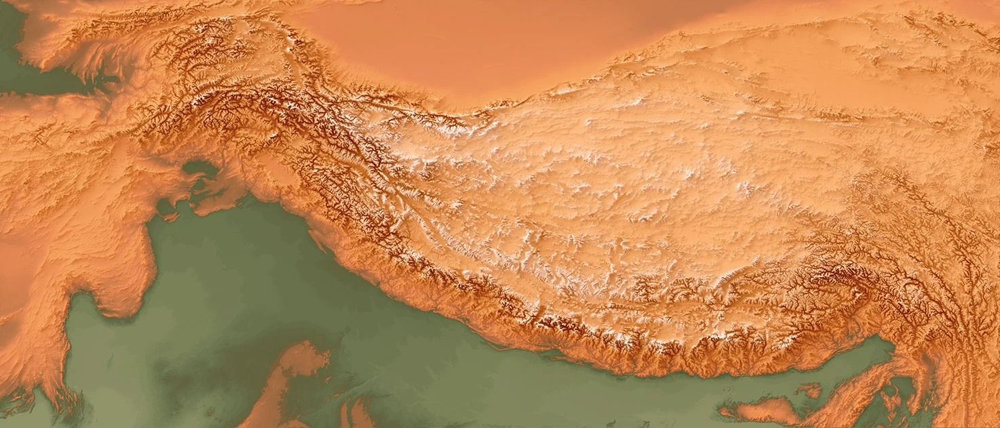

The Himalayas
The Himalayan Database records expeditions to Nepal's major Himalayan peaks from 1905 to 2019. It lists teams, member roles, summit outcomes, deaths, and reported death altitudes across 468 peaks.
The Conquest
In 1921, a British reconnaissance expedition approached Everest from Tibet and began mapping possible routes. The map follows sixteen major Everest lines used or attempted between 1924 and 1996, including the 1953 Southeast Ridge route climbed by Edmund Hillary and Tenzing Norgay on a British-led expedition from Nepal.
The Turn
In the 1970s, 13 of 361 expeditions in the data listed a trekking agency. From 2010 to 2017, 2,933 of 2,979 did. Over the same span, average annual expeditions rose from 36 to 372.
Deaths did not rise at the same pace as expeditions. The death rate across all expedition members was 4.18 percent in the 1970s and 0.85 percent from 2010 to 2017. The dashed lines mark selected disaster years: 1996, 2014, and 2015.
The Climbers
Behind every expedition is a person. The 73,022 members recorded in the Himalayan Database span seven decades, 468 peaks, and dozens of nationalities. As commercial agencies took over in the 1990s, the crowd changed; younger clients, more women, a wider spread of countries.
The Cost
The register includes 957 recorded deaths with a reported death altitude at or above 5,000 meters. Each dot is one person, placed at the altitude where they died.
Split by role, hired staff deaths sit lower than client deaths. Across all peaks, the median is 6,400 meters for hired staff and 7,000 meters for clients.
On Everest, the chart includes 299 deaths at or above 5,000 meters. The median hired-staff death is at 5,800 meters. The median client death is at 8,200 meters.
Those Everest medians are 2,400 vertical meters apart. The gap measures where deaths occurred, not how dangerous each role was by itself.
